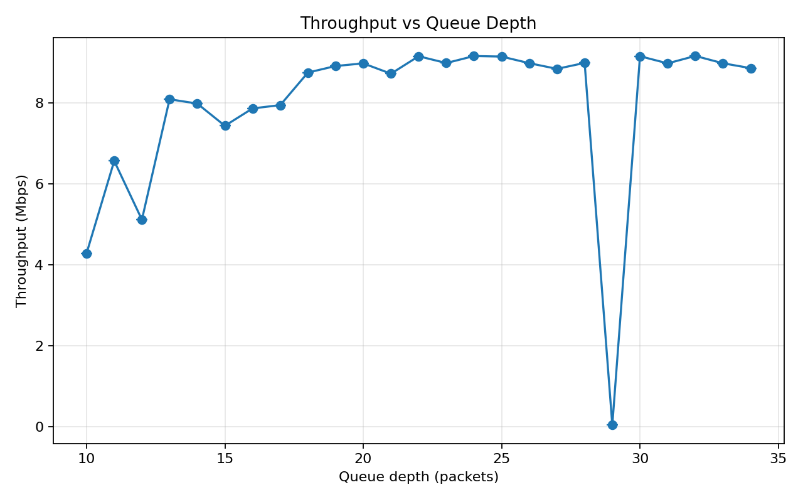
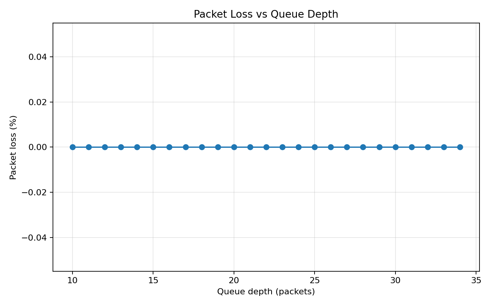

Request: Run TCP on dumbbell while varying queue depth from 10 to 34 packets in steps of 1, with 20 ms delay, 1 trial per queue depth for 2 seconds
{'protocol': 'TCP', 'topology': 'dumbbell', 'delay_ms': 20, 'queue_depth_start': 10, 'queue_depth_end': 34, 'queue_depth_step': 1, 'trials': 1, 'duration': 2, 'bandwidth_mbps': 10, 'udp_rate_mbps': 8}Intent parser: Gemini AI
Task completion: 100.0%Tool success: 100.0% (25/25)Mean trial time: 3.44sError recovery rate: 0.0%Agent iterations: 1
OpenRouter tokens — prompt: 148, completion: 108.
| Queue depth | Successful trials | Mean throughput (Mbps) | Std dev (Mbps) | Mean packet loss |
|---|---|---|---|---|
| 10 | 1 | 4.2877 | 0.0000 | 0.0000% |
| 11 | 1 | 6.5735 | 0.0000 | 0.0000% |
| 12 | 1 | 5.1202 | 0.0000 | 0.0000% |
| 13 | 1 | 8.0979 | 0.0000 | 0.0000% |
| 14 | 1 | 7.9915 | 0.0000 | 0.0000% |
| 15 | 1 | 7.4417 | 0.0000 | 0.0000% |
| 16 | 1 | 7.8718 | 0.0000 | 0.0000% |
| 17 | 1 | 7.9529 | 0.0000 | 0.0000% |
| 18 | 1 | 8.7585 | 0.0000 | 0.0000% |
| 19 | 1 | 8.9200 | 0.0000 | 0.0000% |
| 20 | 1 | 8.9853 | 0.0000 | 0.0000% |
| 21 | 1 | 8.7301 | 0.0000 | 0.0000% |
| 22 | 1 | 9.1621 | 0.0000 | 0.0000% |
| 23 | 1 | 8.9934 | 0.0000 | 0.0000% |
| 24 | 1 | 9.1669 | 0.0000 | 0.0000% |
| 25 | 1 | 9.1540 | 0.0000 | 0.0000% |
| 26 | 1 | 8.9898 | 0.0000 | 0.0000% |
| 27 | 1 | 8.8502 | 0.0000 | 0.0000% |
| 28 | 1 | 8.9965 | 0.0000 | 0.0000% |
| 29 | 1 | 0.0418 | 0.0000 | 0.0000% |
| 30 | 1 | 9.1623 | 0.0000 | 0.0000% |
| 31 | 1 | 8.9857 | 0.0000 | 0.0000% |
| 32 | 1 | 9.1693 | 0.0000 | 0.0000% |
| 33 | 1 | 8.9877 | 0.0000 | 0.0000% |
| 34 | 1 | 8.8675 | 0.0000 | 0.0000% |
Outliers flagged by the 1.5×IQR rule: 0. Failed tests: 0. Review recovery_trace.json and benchmark_results.csv for failed attempts and causes.


Runtime: 112.52s. Raw records: benchmark_results.csv. Recovery events: recovery_trace.json.